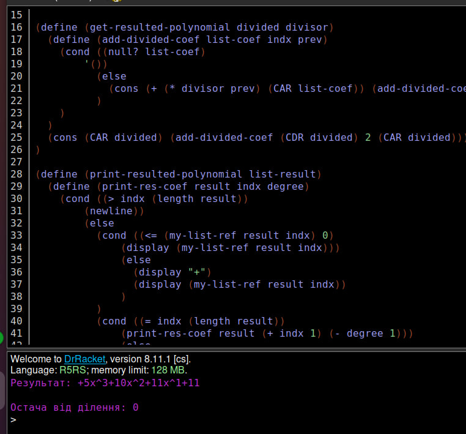

Лабораторна робота 8
Мета роботи
Опанувати теоретичні основи символьних обчислень мовами функціонального програмування. Розробити програми символьного диференціювання та реалізації арифметики поліномів
Вибір мови програмування та IDE
Для виконання даної лабораторної роботи було використано мову функціонального програмування Scheme та IDE DrRacket. Мова Scheme надає великий набір числових типів і операцій з ними, має неявні типи даних та статичну область видимості. DrRacket дозволяє програмувати на великій кількості мов функціонального програмування та має зручний інтерфейс.
Завдання
Умова завдання
Розробити процедури для розкладання многочлена по степенях двочлена. Многочлен та двочлен задані списком своїх коефіцієнтів та степенями у вигляді f(x) = a0x^n + a1x^(n−1) + ... + a(n−1)x + an та g(x) = b0x + b1. Для спрощення можна використовувати схему Горнера. Вивести на екран многочлен, який є результатом P(x) = cng(x)^n + c(n-1)g(x)^(n-1) + ... + c1g(x) + c0. Значення розкладання многочленів при заданому користувачем значенні змінної не обчислювати. Результат подати в символьному вигляді.
Код програми:
(define (my-list-ref items n)
(if (= n 1)
(car items)
(my-list-ref (cdr items) (- n 1 ))))
(define (get-but-last elements)
(define (add-element elems indx)
(if (= indx (length elements))
'()
(cons (CAR elems) (add-element (CDR elems) (+ indx 1)))
)
)
(cons (CAR elements) (add-element (CDR elements) 2))
)
(define (get-resulted-polynomial divided divisor)
(define (add-divided-coef list-coef indx prev)
(cond ((null? list-coef)
'())
(else
(cons (+ (* divisor prev) (CAR list-coef)) (add-divided-coef (CDR list-coef) (+ indx 1) (+ (* divisor prev) (CAR list-coef))))
)
)
)
(cons (CAR divided) (add-divided-coef (CDR divided) 2 (CAR divided)))
)
(define (print-resulted-polynomial list-result)
(define (print-res-coef result indx degree)
(cond ((> indx (length result))
(newline))
(else
(cond ((<= (my-list-ref result indx) 0)
(display (my-list-ref result indx)))
(else
(display "+")
(display (my-list-ref result indx))
)
)
(cond ((= indx (length result))
(print-res-coef result (+ indx 1) (- degree 1)))
(else
(display "x^")
(display degree)
(print-res-coef result (+ indx 1) (- degree 1))
)
)
)
)
)
(print-res-coef list-result 1 (- (length list-result) 1))
)
(define divided_coefs (list 5 5 1 0 -11))
(define divisor_coef 1)
(define result_coefs (get-resulted-polynomial divided_coefs divisor_coef))
(define result_wo_last (get-but-last result_coefs))
(display "Результат: ")
(print-resulted-polynomial result_wo_last)
(newline)
(display "Остача від ділення: ")
(display (my-list-ref result_coefs (length result_coefs)))
Результат роботи програми
Достовірність результату:

Висновок
В ході виконання даної лабораторної роботи було обчислено результат ділення многочлена на двочлен, також було виведено отриманий многочлен на екран. В результаті всі написані функції виконувалися без помилок та видавали правильний результат.